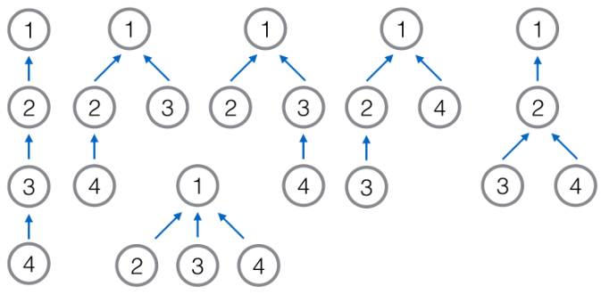
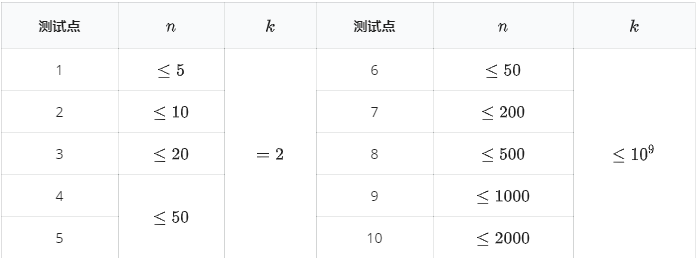

【样例解释】
样例中有五组不同的数据，所以输入格式略有不同。在实际的测试数据中，输入只有一行。
在第一组数据中，能够生成的树是唯一的，因此生成的两棵树必定相同。
在第二组数据中，能够生成的树只有两种，他们是不同构的。因此生成的两棵树同构的概率为 $\displaystyle\frac{1}{2}$，在模 $998244353$ 意义下为 $499122177$。
在第三组数据中，能够生成的树有 $6$ 种，如下图所示。其中第二、三、四棵(第一排中间三棵)是同构的，其余两两不同构。因此生成的两棵树同构的概率为 $\displaystyle\frac{1}{3}$，在模 $998244353$ 意义下为 $332748118$。

【数据范围与提示】

对于 $100%$ 的数据，保证$p$是质数且 $10^8 \le p \le 10^9$。
 Comet OJ
Comet OJ